Toyo, Kochi: things to do, food and stays
Toyo · Kochi
Toyo
Highlighted on the Kochi map.
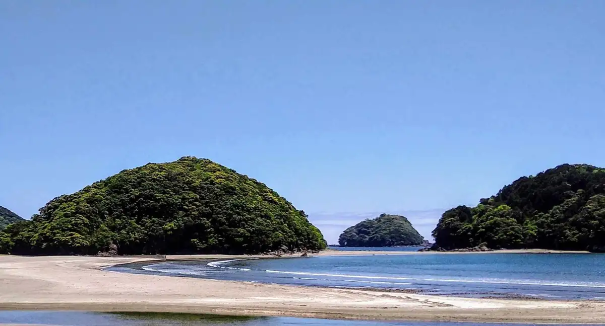
Stay
サウスショア
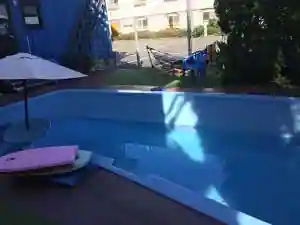
Sausushoa
HOTEL NALU［ホテル ナル］
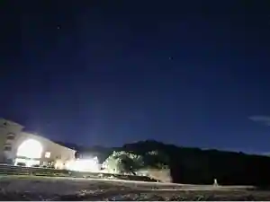
HOTEL NALU [ Hotel Naru ]
みちしお
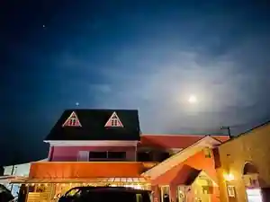
Michishio
the room
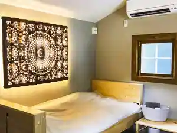
the room
Inn in Kawauchi, Toyo with family-friendly stays.
人と地域をつなぐ宿 Yadorigi
Nin To Chiki Wotsunagu Yado Yadorigi
Inn in Shirahama, Toyo with pet-friendly rooms.
御宿 Fuku
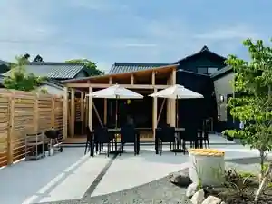
Onjuku Fuku
東洋白浜リゾートホテル
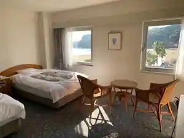
Toyo Shirahama Resort Hotel
星の森
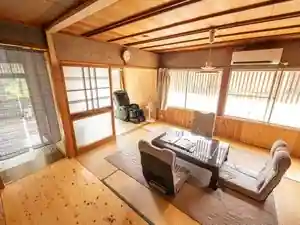
Hoshi No Mori
Dining
いせや食堂
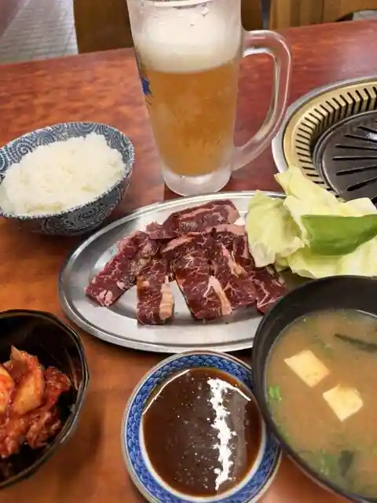
Iseya Shokudo
海駅食堂
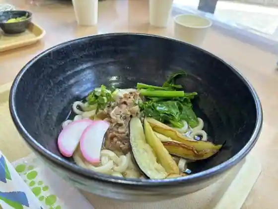
Kaieki Shokudo
アント・ダイナ
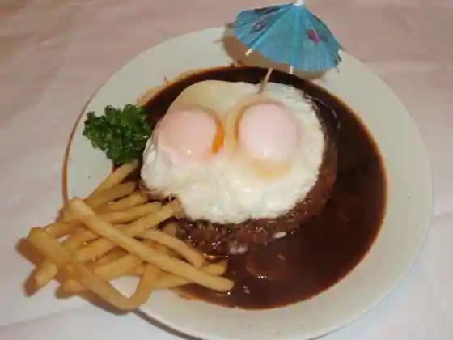
Anto Daina
福田屋 本店
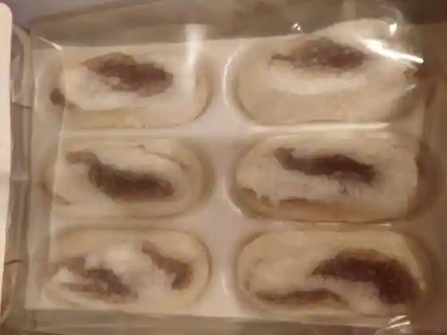
Fukuda Ya Hon
Cafe NALU
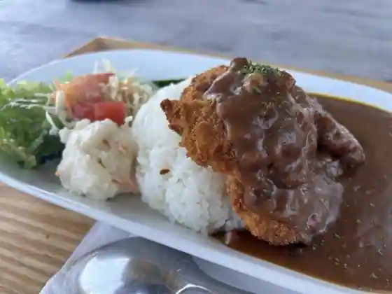
Cafe NALU
GRILL JOIN
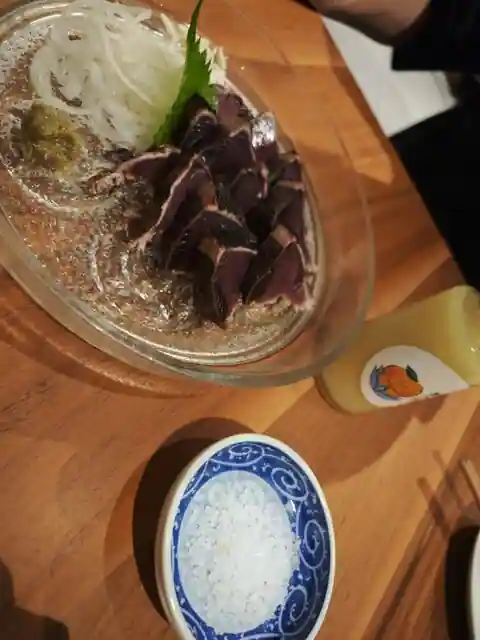
GRILL JOIN
和ダイニング ふぅふぅ
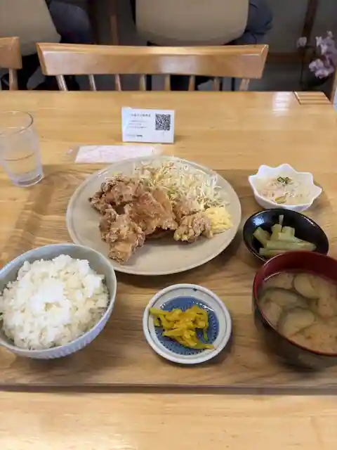
Wa Dining Fufu
浜口福月堂 野根店
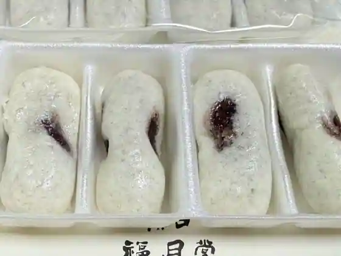
Hamaguchi Fuku Gatsu Do None
まるたや
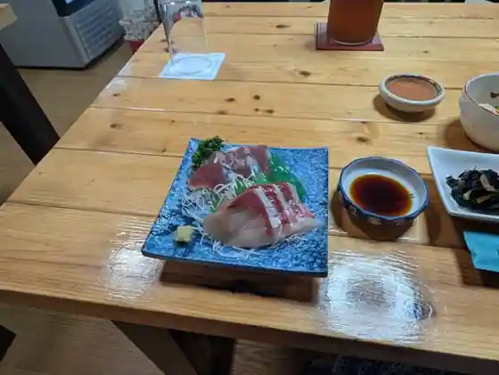
Marutaya
Sights
Shirahama Beach
Nama Ken Coast
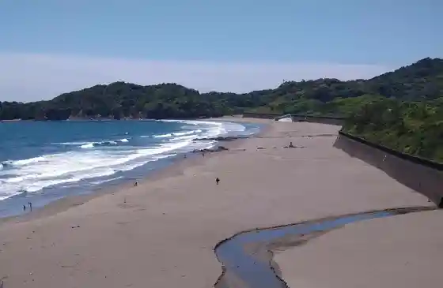
Kannora
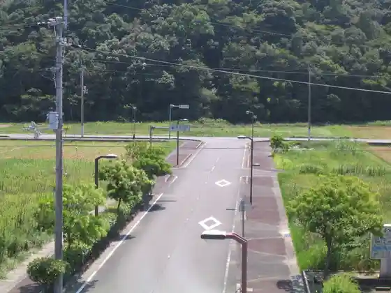
Hokai Shonin Do
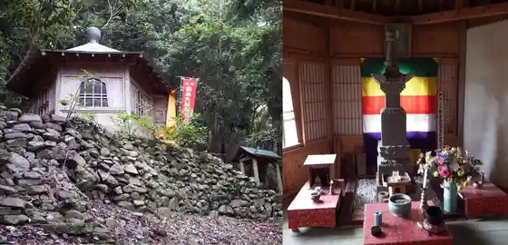
None Chiku
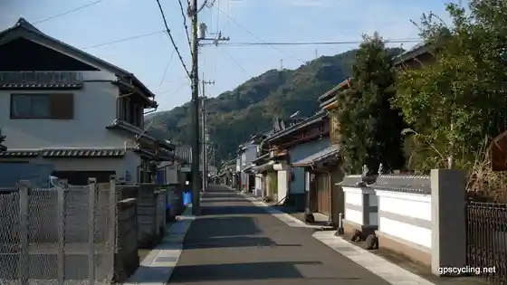
Toyo Town Hall
None Kawa Hashi
Kannora Eki